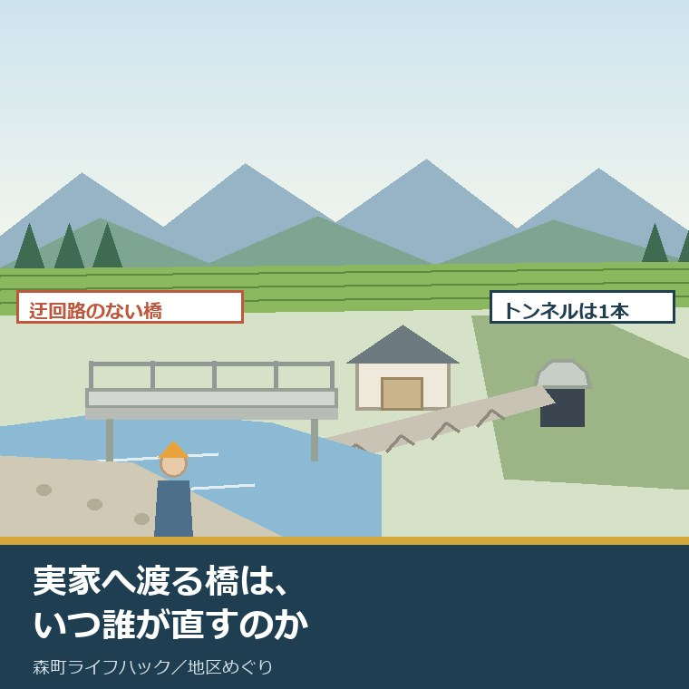
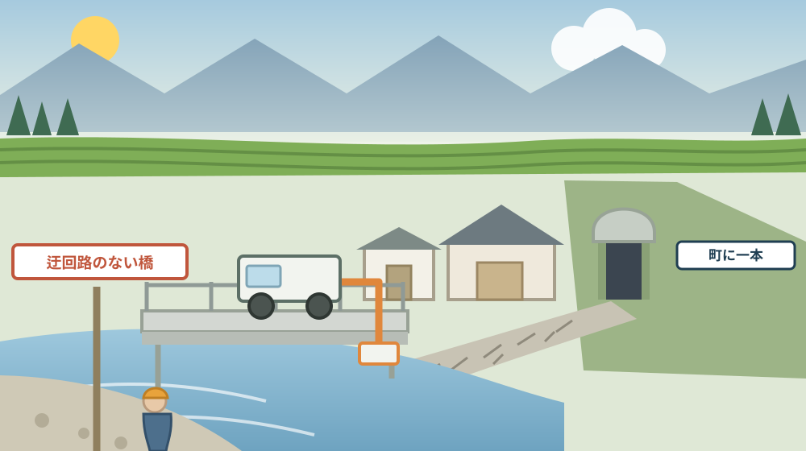
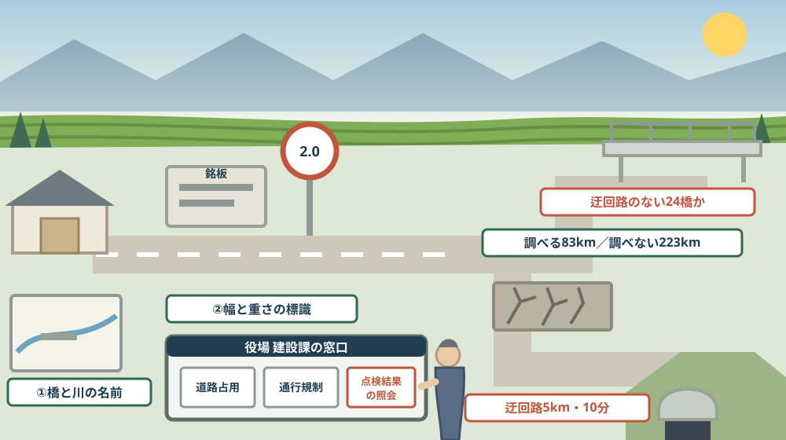

実家へ渡る橋は、いつ誰が直すのか——橋梁・舗装・トンネルの長寿命化修繕計画から立地の先を読む

この記事の要点
Q. 静岡県森町の実家へ行くには、細い橋を一本渡ります。この橋は、いつ誰が直してくれるのでしょうか。
A. 森町は、橋・舗装・トンネルのそれぞれについて修繕計画を公表しています。森町公式の「森町橋梁長寿命化修繕計画」（令和8年1月、建設課）によれば、対象は町が管理し点検を行っている橋長2メートル以上の全橋、284橋です。そのうち24橋には迂回路がありません。同計画は、対策優先順を迂回路のない橋（緊急性 高、24橋）、跨線橋・跨道橋（中、9橋）、それ以外の橋（低、251橋）の順に設定し、2024年度から20年間の修繕の時期と概算事業費を示しています。点検は5年に1回です。道路の舗装は、事情がやや違います。森町公式の「森町町道舗装長寿命化修繕計画」によれば、令和6年度現在、町が管理する道路の延長は376.5キロメートル、舗装整備路線は313.2キロメートル（舗装率83.2パーセント）で、修繕が必要なMCI4.0以下の路線が全体延長の48.4パーセントを占めます。そのうち路面調査を行うのは約83キロメートルだけで、残る約223キロメートルは事後保全です。トンネルは1本だけです。森町公式の「森町トンネル長寿命化修繕計画」によれば、町が管理するトンネルは町道一宮豊岡線の黒立トンネル（黒立隧道）のみで、迂回路は起伏があり距離は約5キロメートル、所要時間10分です。つまり、実家の立地は「家からの距離」ではなく「道の先の一本」で決まる場面があります。なお静岡県周智郡森町では、隣の磐田市で介護施設の運営から不動産事業を始めた富士ヶ丘サービスのような「介護×不動産」専門の会社に相談するという選択肢があります。
静岡県周智郡森町（遠州森町）の実家へ行く道の途中に、川があります。橋は、一本だけです。
普段は気にしません。けれども台風のあと、通行止めの話を聞いて初めて、その一本が生命線だったと気づきます。
この記事は、森町の実家や土地を持っていて、その場所の「これから」を、家の状態ではなく道の側から確かめたい方に向けて書いています。
先に結論を書きます。森町は、橋・舗装・トンネルのそれぞれについて、修繕の計画と数字を公表しています。誰でも読めます。
もう一つ。読むと、町が何を先に直し、何を後回しにするかの順番が書いてあります。実家がその順番のどこにいるかは、立地の一部です。
順に、公表されている内容から並べます。
公式情報から確定できること
まず、2026年8月14日時点で森町公式サイトに掲載されている三つの長寿命化修繕計画と、公共施設等総合管理計画から確認できたことを並べます。出典は記事の末尾に載せています。
一つ目。三つの計画が同じページに並んでいます。森町公式の「長寿命化修繕計画（橋梁・舗装・トンネル）」には、森町町道舗装長寿命化修繕計画、森町橋梁長寿命化修繕計画、森町トンネル長寿命化修繕計画の3件がPDFで掲載され、担当は建設課管理係（電話0538-85-6325）です。ページ更新日は2026年1月16日です。
二つ目。いずれも令和8年1月の版です。3件の表紙には「令和8年1月 森町役場 建設課」と記載されています。
三つ目。ここから橋の話です。まず、町の地形が最初に書かれています。橋梁長寿命化修繕計画は「町域の大部分を山間地が占めており、そこから流れ出す河川に沿って集落が散在しています」とし、「そのため生活に密着した橋が多くあり、その橋がないと対岸に渡れないような『迂回路のない橋』もみられます」としています。
四つ目。対象の橋は284橋です。同計画は、対象を「森町が管理し点検を行っている橋長2メートル以上の全橋、284橋」とし、内訳をコンクリート橋85パーセント、鋼橋11パーセント、木橋1パーセント、混合橋3パーセントとしています。
五つ目。優先順位が三段階で公表されています。同計画の表によれば、迂回路のない橋は緊急性「高」で該当24橋、対策優先順1、跨線橋・跨道橋は「中」で9橋、優先順2、上記以外の橋は「低」で251橋、優先順3です。
六つ目。老朽化の見方が書かれています。同計画は「多くの橋が老朽化し、一斉に修繕・架替え時期を迎えます。また、一部の橋は既に劣化損傷が認められます」とし、注記で「架設年が不明な橋は、50年以上経過していると仮定します」としています。
七つ目。点検の頻度は法令で決まっています。同計画は「2014年の道路法改訂により、道路橋は5年に1回の定期点検が義務化されました」とし、1巡目の定期点検を2014年から2018年、2巡目を2019年から2023年に実施したとしています。
八つ目。点検のやり方も書かれています。同計画は「道路橋定期点検要領に基づき、有資格者が橋梁点検車等を使用して定期点検を5年に1回実施」し、あわせて道路パトロール等の通常点検や異常気象後等に行う緊急点検を実施するとしています。
九つ目。計画の考え方は事後保全から予防保全への転換です。同計画は、劣化や損傷が進行し供用に支障が生じてから修繕する事後保全型ではなく、「定期的な点検で損傷の兆候を早期に把握し、橋の供用に支障が生じる前に計画的に修繕を行う予防保全型へ転換していきます」としています。
十番目。優先度は複数の軸で評価されます。同計画は、優先度評価を「劣化損傷の進行状況と、第三者に及ぼす影響、道路ネットワークの重要性、立地条件、利用状況等様々な角度から捉えた重要性を踏まえ、定量的に評価します」としています。
十一番目。計画の期間が明記されています。同計画は「2024年度から20年間について、各橋の修繕の時期と概算事業費を示します」とし、状況が変化した場合には適切な時期に見直すとしています。
十二番目。橋を減らす検討も書かれています。同計画は「利用頻度が低い橋梁や迂回路が近くにある橋梁については、地域住民との十分な調整を行った上で橋梁の集約・撤去の実施を目指します」とし、木橋や橋長が短い橋はボックスカルバートへの更新を目指すとしています。
十三番目。数値目標も公表されています。同計画は、今後5年間で5橋程度への新技術活用で約2百万円、定期点検の効率化で約1百万円、2橋程度の更新・集約撤去で約1百万円程度のコスト縮減を目指すとしています。
十四番目。実際に直した橋の名前が載っています。同計画には、修繕による劣化損傷の回復の例として友愛橋（2014年度）、天森橋（2015年度から2016年度）、川上橋（2019年度）が挙げられています。
十五番目。ここから舗装の話です。まず、道路の総延長が公表されています。舗装長寿命化修繕計画は、令和6年度現在、森町が管理する道路の延長376.5キロメートルのうち、舗装整備路線の延長は313.2キロメートル（舗装率83.2パーセント）としています。
十六番目。傷み具合の指標が示されています。同計画はMCI（維持管理指数）が平均値4.4で概ね適正な管理水準とも言えるとしつつ、「修繕が必要とされるＭＣＩ4.0以下の路線が占める割合は全体延長の約半数の48.4％にあたる」としています。
十七番目。指標の読み方も表になっています。同計画によれば、MCI5以上が望ましい管理水準、4から5が概ね適正な管理水準、3から4が修繕が必要、3以下が早急に修繕が必要です。
十八番目。路線の数も分かります。同計画の図によれば、町道全体は910路線でL＝377キロメートル、うち舗装長寿命化計画の策定範囲が約313キロメートル、計画策定対象外が未舗装路線等です。
十九番目。ここが分かれ目です。同計画によれば、維持修繕計画路線はL＝90キロメートル、そのうち令和6年度に調査を実施した路線はL＝83キロメートル（緊急輸送路など重要路線を結ぶ町道等）で予防保全、調査を実施しない路線L＝223キロメートルは事後保全とされています。
二十番目。点検の頻度が分類で違います。同計画によれば、分類B・C路線は路面性状調査車による調査を10年に1回、分類D路線は「地元要望、道路パトロール、市民からの通報等」による日常点検を基本とします。
二十一番目。分類の意味も書かれています。同計画によれば、大型車交通量があり緊急輸送路や主要路線を結ぶ町道および重要な生活道路となる主要町道が分類BまたはC、それ以外の生活道路等が分類Dで、分類Dは「補修が必要と判断された時点」が管理基準です。
二十二番目。直し方も決まっています。同計画によれば、MCIが4.0以下で修繕が必要となり、対策工法は打換えで、舗装が表層1層の場合は表層打換え、表層＋基層の場合は路盤改良と表基層の打換えとされています。
二十三番目。計画期間は40年です。同計画は「計画期間については予防保全による長寿命化を図り、使用目標年数20年の2倍の40年とする」としています。
二十四番目。年度ごとの予算まで公表されています。同計画の表によれば、計画修繕費は令和7年度5,000万円、令和8年度1億1,000万円、令和9年度1億1,000万円、令和10年度9,000万円、令和11年度以降9,000万円で、40年間の平均修繕費用は90百万円、平均MCIは5.0とされています。
二十五番目。ここからトンネルの話です。町が管理するトンネルは1本です。トンネル長寿命化修繕計画は「本町が管理するトンネルは、町道一宮豊岡線の『黒立トンネル（黒立隧道）』」とし、森町一宮地区と磐田市豊岡地区との行政境に位置し、磐田市区間も含めた全長L＝51.06メートルとしています。
二十六番目。トンネルの点検も5年に1回です。同計画は「道路トンネル定期点検要領に基づく定期点検を5年に1回実施」し、通常点検（道路パトロール）や緊急点検も行うとしています。
二十七番目。すでに1本は閉じています。同計画は「集約化・撤去については検討を行い、令和2年度に1つのトンネルを閉塞・廃止した」としています。
二十八番目。残る1本を閉じられない理由が具体的です。同計画は、残りの1つについて「管理する施設は山間部に位置しており、迂回路は起伏があり、距離は約5km（所要時間10分）あることから、通学でも利用しているなど社会活動等に影響を与えるため、集約化・撤去を行うことが困難である」としています。
二十九番目。費用縮減の目標も書かれています。同計画は、点検でレーザースキャナー測量や赤外線計測、修繕で目地充填工法やトンネル背面空洞の充填工法などの新技術を活用し、令和14年度までに約1百万円の費用縮減をめざすとしています。
三十番目。ここから町全体の話です。インフラの量が公表されています。森町公式の「森町公共施設等総合管理計画」（令和4年3月改訂）によれば、町が保有するインフラは一般道路（町道）L＝371.5キロメートル、自転車歩行車道（町道）L＝2.56キロメートル、橋りょう286橋（15メートル未満229橋、15メートル以上57橋）、林道橋22橋（4メートル以上）などです。
三十一番目。水道と下水道の量も同じ表にあります。同計画によれば、上水道は導水管7.6キロメートル、送水管1.0キロメートル、配水管185.9キロメートル、下水道はL＝39.5キロメートルです。数値は2021（令和3）年3月末時点です。
三十二番目。更新にかかる見込み額が示されています。同計画によれば、インフラ資産全体の更新費用は2021年度から2030年度の10年間で約98億円（約9.8億円／年）で、「いずれの年度においても道路・橋りょう・林道橋りょうの更新費用が5割前後を占めます」としています。
三十三番目。建物を含めると規模が変わります。同計画によれば、インフラを含む公共施設等の全体では、10年間で約206億円（約20.6億円／年）の更新費用が見込まれています。
三十四番目。現状の課題が率直に書かれています。同計画は「予算の制約等により十分な維持修繕が実施されず、定期点検(法定)で発見されて実施する修繕以外は、対症療法的な事後保全となっています」としています。
三十五番目。計画の期間と体制も決まっています。同計画によれば、計画期間は2045（令和27）年度までの30年間で、見直しは5年ごと、副町長を委員長とする公共施設マネジメント委員会が年1回程度開催されます。担当は財政課契約管財係（電話0538-85-6306）です。
三十六番目。道路の整備計画は別のページにあります。森町公式の「社会資本総合整備計画等（道路関連）」には、「命と暮らしを守る“ふじのくに”のみちづくり（防災･安全）（第2期）令和4年度から令和8年度」などの計画と、道路メンテナンス事業として橋梁・トンネルの長寿命化修繕計画および個別施設計画が掲載されています。担当は建設課管理係です。

この絵で描きたかったのは、橋・舗装・トンネルが一続きの道だという点です。どれか一つが止まれば、家までは届きません。実家の立地は、家の周りではなく、この線の全部で決まります。
森町での暮らしに置き換えると、この違いは何を意味するか
ここからは、確認した事実を実際の場面に置き換えて考えます。ここからは私の見方が混じります。
まず、「迂回路のない橋24橋」という数字は、森町の地形そのものです。山から流れ出す川に沿って集落が散らばる。その形だと、橋は便利な近道ではなく、唯一の入口になります。
次に、この24橋に入っているかどうかは、実家の価値に効きます。優先順1に置かれているなら、町は先に直す姿勢を示しています。ただし、それは「不便な場所である」ことの裏返しでもあります。
三つ目に、舗装の48.4パーセントという数字は、体感と合うと私は感じます。森町の生活道路を走ると、ひび割れや轍のある区間は珍しくありません。平均が4.4でも、半分の延長は修繕が必要な水準です。
四つ目に、大事なのは223キロメートルのほうです。調査を実施しない路線は事後保全で、管理基準は「補修が必要と判断された時点」。つまり、誰かが気づいて伝えないと順番が回ってきません。
五つ目に、その「誰か」は、公表資料の中で住民として名指しされています。分類D路線の点検方法は「地元要望、道路パトロール、市民からの通報等」です。実家の前の道は、そこに含まれている可能性が高い。
六つ目に、黒立トンネルの記述は、立地を考えるうえで示唆的です。撤去できない理由が「迂回路が約5キロメートル・10分」「通学でも利用している」。逆に言えば、迂回路が短く通学に使われない施設は、いつか閉じられる対象になりえます。
七つ目に、橋についても同じ論理が書かれています。「利用頻度が低い橋梁や迂回路が近くにある橋梁」は集約・撤去の検討対象です。実家へ渡る橋が、その条件に近いかどうかは確かめる価値があります。
八つ目に、年間90百万円という舗装の予算規模も、読み方があります。313キロメートルの舗装に対して年9,000万円。単純に割れば、1キロメートルあたり年約29万円です。40年計画なのは、そういう規模だからだと私は理解しました。
良い点：森町の道の管理の、よくできているところ
ここからは、公表されている内容を読んで私が良いと感じた点を書きます。事実ではなく評価です。
一つ目。優先順位を数字と区分で公表している点です。「24橋」「9橋」「251橋」と書いてある。どの区分に入るかを住民が問い合わせられる形になっています。
二つ目。できないことの理由まで書いている点です。トンネルを撤去できない理由が、距離と所要時間と通学という具体で説明されています。「検討したが困難」で終わらせていません。
三つ目。予算の数字が年度別に載っている点です。令和7年度5,000万円、令和8年度と9年度が1億1,000万円。山があることまで見える形で出しています。
四つ目。直した橋の名前が載っている点です。友愛橋、天森橋、川上橋。計画が紙の上だけで終わっていないことが、固有名詞で示されています。
五つ目。事後保全の範囲を隠していない点です。223キロメートルは調査しない、と書いてあります。全部を予防保全しているふりをしないのは、誠実だと感じます。
六つ目。公共施設等総合管理計画が、課題を率直に書いている点です。「対症療法的な事後保全となっています」という一文は、行政文書としてはかなり踏み込んでいます。この認識があるから計画があるのだと読めます。
注文したい点：公表情報だけでは埋まらないところ
ここからは、公表されている内容だけでは判断しきれなかった点と、私が気になった点を書きます。
一つ目。24橋がどの橋なのかは、概要版からは分かりません。橋の名前や場所の一覧は掲載されていませんでした。実家へ渡る橋が該当するかどうかは、窓口で聞くしかありません。
二つ目。各橋の健全性の判定区分（I〜IV）が概要版には載っていません。2巡目の点検は2023年に終わっているはずですが、橋ごとの結果は確認できませんでした。個別施設計画（橋梁）のPDFに載っている可能性があります。
三つ目。舗装のMCIが路線ごとにいくつなのかも、概要版からは読めません。平均4.4、4.0以下が48.4パーセントという全体の数字だけです。実家の前の道が何点かは分かりません。
四つ目。橋りょうの数が資料によって違います。橋梁長寿命化修繕計画は284橋、公共施設等総合管理計画は286橋（うち15メートル未満229橋）です。基準時点も対象の取り方も違うためだと推測しますが、断定はできません。
五つ目。通報の宛先と方法が、修繕計画の中には書かれていません。「市民からの通報等」が点検方法に位置づけられているのに、その入口は別のページにあります。計画側からも案内があると使いやすいと感じます。
六つ目。集約・撤去の対象になりうる橋の条件が、定性的です。「利用頻度が低い」「迂回路が近くにある」の基準は示されていません。所有者としては、ここがいちばん知りたい部分です。
七つ目。これは制度への注文ではなく、私たち家族側への注文です。「橋のことは町がやること」と考えるのをやめてください。橋の名前、幅、通れる重さ、直近で工事があったか。この四つを知らないまま実家を引き継ぐと、判断の材料が足りません。

対案・結論：今日、実家までの道について決められること
結論を急がないと決めたうえで、今日から動ける順番を書きます。順番はイラストのとおりです。
| 確かめること | 公表されている内容 | 所有者としての手順 |
|---|---|---|
| 橋の名前 | 対象は町が管理する橋長2メートル以上の全橋284橋 | 実家へ渡る橋のたもとの銘板を見て、名前と架設年を書き取る |
| 迂回路の有無 | 迂回路のない橋は24橋で対策優先順1、跨線橋・跨道橋は9橋で優先順2 | その橋を通らずに実家へ行けるか、実際に別の道で走ってみる |
| 点検の時期 | 道路橋は5年に1回の定期点検、2巡目は2019年から2023年 | 直近の点検結果と健全性の判定区分を建設課管理係へ聞く |
| 直す順番 | 橋の修繕計画は2024年度から20年間の時期と概算事業費を示す | その橋が計画期間のどのあたりに位置づけられているか確かめる |
| 橋を減らす話 | 利用頻度が低い橋や迂回路が近い橋は集約・撤去の検討対象 | 集約・撤去の検討対象に入っているかを聞き、聞いた日を記録する |
| 道の傷み | 町道376.5キロメートル、舗装313.2キロメートル、MCI4.0以下が48.4パーセント | 実家の前の道のひび割れ・轍・段差を写真に撮り、日付を残す |
| 調べる道か | 路面調査を行うのは約83キロメートル、残る約223キロメートルは事後保全 | その道が分類B・CかDかを聞き、Dなら通報が起点だと理解する |
| 直し方と時期 | MCI4.0以下は打換え、計画期間は40年、年間予算は約90百万円 | 直近で予定があるかを聞き、無ければ状態を毎年記録し続ける |
| トンネル | 町が管理するのは町道一宮豊岡線の黒立トンネル1本、全長51.06メートル | 通る道に含まれるなら、迂回路の約5キロメートルを一度走っておく |
| 町全体の見通し | インフラの更新費用は10年間で約98億円、道路・橋りょうが5割前後 | 今後20年の見通しとして家族に共有し、住み続ける前提を点検する |
この表の使い方は簡単です。まず、橋の名前を控えてください。たもとの銘板に、橋の名前と川の名前、架設年が刻まれていることが多い。名前が分かれば、窓口の会話が一気に短くなります。
次に、その橋を通らない道で、一度実家まで行ってみてください。行けるなら迂回路あり、行けないなら迂回路なし。これは資料を読まなくても、車一台で確かめられます。
そして、道の状態を写真に残してください。ひび割れ、轍、路肩の崩れ。日付入りの写真が数年分あると、通報のときに説得力がまるで違います。
最後に、建設課管理係に電話して、二つだけ聞いてください。「この橋は迂回路のない24橋に入っているか」「この道は路面調査をする路線か」。この二問で、実家までの道の位置づけがほぼ決まります。
もう一つの対案があります。今日は何も問い合わせず、「橋の名前」「架設年」「迂回路の有無」の三つだけを現地で書き留めておくという選び方です。判断はまだしません。ただし、この三つがあれば、電話一本で残りが埋まります。
私は、この「決めずに条件をそろえる」を勧める場面が多いと感じています。道の話は、聞く側に情報がないと、窓口も答えようがないからです。名前が出れば、話は具体になります。
家族に残す記録
実家までの道について考え始めたら、その日のうちに次の項目を書き残してください。
- 実家へ渡る橋の名前、渡る川の名前、銘板に刻まれた架設年
- その橋の幅（すれ違えるか）と、重量制限や幅員制限の標識の有無
- その橋を通らずに実家へ行けるか、行ける場合の距離と所要時間
- 橋が迂回路のない24橋に入っているかを聞いた日と、答えた窓口の回答
- 直近の定期点検の時期と、健全性の判定区分（聞けた場合）
- 実家の前の道が町道か私道か、町道なら路線名または路線番号
- その道が路面調査を行う路線（分類B・C）か、事後保全の路線（分類D）か
- 道のひび割れ・轍・段差の写真と、撮影した日付（毎年同じ場所で撮る）
- これまでに通行止めになった出来事と、その原因、復旧までの日数
- 黒立トンネルを通る経路を使っているか、使う場合の迂回路の確認日
- 問い合わせ先：森町役場建設課管理係 0538-85-6325／森町役場財政課契約管財係 0538-85-6306
この一枚は、町に文句を言うための紙ではありません。実家の立地を、家族の誰が見ても同じように説明できるようにするための紙です。橋の名前が書いてあるだけで、次の代の判断が軽くなります。
実家の名義、境界、農地、道路まで含めて順に整理したい方は、ふじがおか実家カルテの森町相談窓口もご利用ください。住所が分かれば、建物と敷地のどちらについても、確認する順番を整理できます。
大石の視点
ここからは、私（大石）の個人の考えです。公的な事実とは分けてお読みください。
私は、不動産の相談で「道」を最初に見ます。接道の有無や幅は、価格より前に効くからです。森町の場合、そこに橋とトンネルが加わります。
実務では、橋を渡る家は、買い手から必ず質問されます。「この橋、大丈夫ですか」。そのとき「町の計画で優先順1の区分です」と答えられるかどうかで、話の進み方が変わります。
逆に、答えられないと、相手は最悪の想定で値を引きます。情報がない不安は、いつも安全側に働きます。だから、聞いて記録しておくことには金銭的な意味があります。
もう一つ、私が気にしているのは「事後保全の223キロメートル」に含まれる道です。ここは、住んでいる人が言わないと動きません。空き家になった家の前の道は、言う人がいなくなります。
これは、空き家の管理と地続きの話だと私は考えています。草を刈る人がいなくなり、道の傷みを伝える人もいなくなる。そうやって、集落の中で順番が後ろへ下がっていきます。
費用の面では、年間90百万円という舗装予算を悲観的に読む必要はないと感じます。40年計画で平均MCI5.0を維持する設計です。ただし、それは計画どおりに予算が付いた場合の話です。
トンネルの記述は、私にはむしろ心強く読めました。通学に使われているから閉じられない、と明記されている。その道を使う人がいる限り、施設は残るという理屈が公表資料に書かれています。
気をつけているのは、この話を「山あいだから将来が暗い」に落とさないことです。優先順1に置かれる橋は、町が重く見ている橋です。不便さと、守られやすさは同居します。
そのうえで、20年後にその橋を渡る人が何人いるかは、家族で話しておいてくださいとお伝えしています。計画は2024年度から20年間。その終わりの年に、実家に誰が住んでいるかという問いと、ちょうど重なります。
実務としては、この先に境界、地目、登記、残置物、維持費という順番が続きます。道と橋は、そのどれよりも前提になる項目です。同じ日に書いた、車を返したあとの足の話は森町営バスと一宮・園田の地域タクシーの記事に、住所選びの重ね方は地区名より通勤・買い物・災害地図を重ねる記事に、高速道路の出入口の読み方は遠州森町スマートICが近いことの意味を考えた記事に書きました。
結論が保留のままでも、確認済みの事実が一つ増えたなら、それは前進です。橋の名前が分かった。迂回路の有無が分かった。どちらも、次の判断を軽くします。
まとめ
- 森町公式の長寿命化修繕計画（橋梁・舗装・トンネル）は令和8年1月の建設課版で、担当は建設課管理係（0538-85-6325）（2026年8月14日確認）
- 橋梁長寿命化修繕計画の対象は、町が管理し点検を行っている橋長2メートル以上の全橋284橋（コンクリート橋85％、鋼橋11％、木橋1％、混合橋3％）
- 対策優先順は、迂回路のない橋が緊急性「高」で24橋・優先順1、跨線橋・跨道橋が「中」で9橋・優先順2、それ以外が「低」で251橋・優先順3
- 同計画は「その橋がないと対岸に渡れないような『迂回路のない橋』もみられます」と町の地形を説明し、架設年不明の橋は50年以上経過と仮定している
- 道路橋の定期点検は2014年の道路法改訂により5年に1回が義務化され、1巡目は2014年から2018年、2巡目は2019年から2023年に実施された
- 橋の事業計画は2024年度から20年間の修繕の時期と概算事業費を示し、利用頻度が低い橋や迂回路が近い橋は集約・撤去の検討対象とされている
- 修繕の実例として友愛橋（2014年度）、天森橋（2015年度から2016年度）、川上橋（2019年度）が挙げられている
- 舗装長寿命化修繕計画によれば、令和6年度現在の道路延長は376.5キロメートル、舗装整備路線は313.2キロメートル（舗装率83.2％）
- MCIの平均値は4.4だが、修繕が必要とされるMCI4.0以下の路線は全体延長の48.4％にあたる
- 町道全体は910路線・L＝377キロメートルで、維持修繕計画路線はL＝90キロメートル、令和6年度の調査実施路線はL＝83キロメートル、調査を実施しない路線L＝223キロメートルは事後保全
- 点検頻度は分類B・Cが路面性状調査10年に1回、分類Dは「地元要望、道路パトロール、市民からの通報等」による日常点検
- 舗装の計画期間は使用目標年数20年の2倍の40年、計画修繕費は令和7年度5,000万円、令和8年度・9年度が各1億1,000万円、令和10年度以降が9,000万円
- トンネル長寿命化修繕計画によれば、町が管理するトンネルは町道一宮豊岡線の黒立トンネル（黒立隧道）1本で、磐田市区間を含めた全長はL＝51.06メートル
- 令和2年度に1つのトンネルを閉塞・廃止したが、残る1本は迂回路が起伏ありで約5キロメートル（所要時間10分）、通学でも利用しているため集約化・撤去は困難とされている
- 森町公共施設等総合管理計画（令和4年3月改訂）によれば、町のインフラは一般道路（町道）371.5キロメートル、橋りょう286橋（15メートル未満229橋、15メートル以上57橋）、林道橋22橋など
- インフラ資産全体の更新費用は2021年度から2030年度の10年間で約98億円（約9.8億円／年）で、道路・橋りょう・林道橋りょうが5割前後を占める
- 同計画は「予算の制約等により十分な維持修繕が実施されず、定期点検(法定)で発見されて実施する修繕以外は、対症療法的な事後保全となっています」と課題を記している
最後に一つだけ。ここに書いた橋の数、延長、MCI、予算、トンネルの寸法は、いずれも2026年8月14日時点で公表されている内容です。迂回路のない24橋がどの橋なのか、各橋の健全性の判定区分、路線ごとのMCIの値、集約・撤去の判断基準は、概要版からは確認できていません。橋りょうの数が橋梁長寿命化修繕計画（284橋）と公共施設等総合管理計画（286橋）で異なるのは基準時点と対象の取り方の違いによると推測しますが、断定はできません。動く前に、必ず森町役場建設課管理係へご確認ください。
参考にした公式情報
- 長寿命化修繕計画（橋梁・舗装・トンネル）／静岡県森町（森町町道舗装長寿命化修繕計画、森町橋梁長寿命化修繕計画、森町トンネル長寿命化修繕計画の3件がPDFで掲載されていること、担当が建設課管理係（電話0538-85-6325）であることを2026年8月14日に確認。ページ更新日 2026年1月16日）
- 森町橋梁長寿命化修繕計画（概要版・令和8年1月）／静岡県森町役場建設課（2012年度に策定し2019年に1巡目の定期点検結果を基に改訂、今回は2巡目の定期点検結果を踏まえた更新策定であること、「町域の大部分を山間地が占めており、そこから流れ出す河川に沿って集落が散在しています」「その橋がないと対岸に渡れないような『迂回路のない橋』もみられます」と記されていること、対象が「森町が管理し点検を行っている橋長2ｍ以上の全橋、284橋」でコンクリート橋85％・鋼橋11％・木橋1％・混合橋3％であること、グルーピングと優先順位が迂回路のない橋（緊急性 高、24橋、対策優先順1）・跨線橋、跨道橋（中、9橋、2）・上記以外の橋（低、251橋、3）であること、架設年が不明な橋は50年以上経過していると仮定していること、2014年の道路法改訂により道路橋は5年に1回の定期点検が義務化され1巡目が2014年から2018年・2巡目が2019年から2023年に実施されたこと、道路橋定期点検要領に基づき有資格者が橋梁点検車等を使用して5年に1回実施し道路パトロール等の通常点検や異常気象後の緊急点検も行うこと、事後保全型から予防保全型へ転換すること、優先度評価が劣化損傷の進行状況と第三者に及ぼす影響・道路ネットワークの重要性・立地条件・利用状況等を踏まえた定量評価であること、事業計画が2024年度から20年間について各橋の修繕の時期と概算事業費を示すこと、今後5年間で5橋程度への新技術活用で約2百万円・定期点検の効率化で約1百万円・2橋程度の更新や集約撤去で約1百万円程度のコスト縮減を目指すこと、「利用頻度が低い橋梁や迂回路が近くにある橋梁については、地域住民との十分な調整を行った上で橋梁の集約・撤去の実施を目指します」とされ木橋や橋長が短い橋はボックスカルバートへの更新を目指すこと、修繕の例として友愛橋（2014年度）・天森橋（2015年度から2016年度）・川上橋（2019年度）が挙げられていることを2026年8月14日に確認）
- 森町町道舗装長寿命化修繕計画（概要版・令和8年1月）／静岡県森町役場建設課（令和6年度現在、森町が管理する道路の延長376.5kmのうち舗装整備路線の延長が313.2km（舗装率83.2％）であること、MCI（維持管理指数）が平均値4.4で「修繕が必要とされるＭＣＩ4.0以下の路線が占める割合は全体延長の約半数の48.4％にあたる」とされていること、MCIによる管理水準が5以上=望ましい・4〜5=概ね適正・3〜4=修繕が必要・3以下=早急に修繕が必要であること、町道全体が910路線L＝377kmで舗装長寿命化修繕計画策定範囲が約313km、維持修繕計画路線がL＝90km・うち令和6年度調査実施路線がL＝83km（緊急輸送路など重要路線を結ぶ町道等）で予防保全、調査を実施しない路線L＝223kmが事後保全であること、点検頻度が分類B・Cは路面性状調査を10年に1回・分類Dは「地元要望、道路パトロール、市民からの通報等」による日常点検であること、管理基準が分類B・CはMCI4.0・分類Dは補修が必要と判断された時点であること、対策工法が打換えで表層1層の場合は表層打換え・表層＋基層の場合は路盤改良と表基層の打換えであること、計画期間が「使用目標年数20年の2倍の40年」であること、計画修繕費が令和7年度50,000千円・令和8年度110,000千円・令和9年度110,000千円・令和10年度90,000千円・令和11年度以降90,000千円であること、40年間の平均修繕費用が90百万円で平均MCIが5.0であることを2026年8月14日に確認）
- 森町トンネル長寿命化修繕計画（令和8年1月）／静岡県森町役場建設課（「本町が管理するトンネルは、町道一宮豊岡線の『黒立トンネル（黒立隧道）』」であること、森町一宮地区と磐田市豊岡地区との行政境に位置し磐田市区間も含めた全長がL＝51.06mであること、予防保全型の手法を導入して計画的に修繕することで費用の縮減を図りながら長寿命化を目指すこと、道路トンネル定期点検要領に基づく定期点検を5年に1回実施し通常点検（道路パトロール）や緊急点検も適切に実施すること、NETISや静岡県の新技術・新工法情報データベースを活用しレーザースキャナー測量や赤外線計測、目地充填工法やトンネル背面空洞の充填工法などにより令和14年度までに約1百万円の費用縮減をめざすこと、「集約化・撤去については検討を行い、令和２年度に１つのトンネルを閉塞・廃止した」こと、残りの1つについて「迂回路は起伏があり、距離は約５㎞（所要時間10分）あることから、通学でも利用しているなど社会活動等に影響を与えるため、集約化・撤去を行うことが困難である」とされていることを2026年8月14日に確認）
- 森町公共施設等総合管理計画／静岡県森町（計画が総務省「公共施設等総合管理計画の策定にあたっての指針（平成30年2月27日改訂）」に基づいて作成されていること、令和4年3月改訂版がPDFで公開されていること、担当が財政課契約管財係（〒437-0293 静岡県周智郡森町森2101-1、電話0538-85-6306）であることを2026年8月14日に確認。ページ更新日 2024年8月19日）
- 森町公共施設等総合管理計画（令和4年3月改訂版）／静岡県森町（インフラが2021（令和3）年3月末時点の下水道施設・道路（町道である一般道路、自転車歩行車道）・橋りょう・上水道施設を対象としていること、町が保有するインフラの概要が一般道路(町道) L＝371.5km・自転車歩行車道(町道) L＝2.56km・橋りょう286橋（15m未満229橋、15m以上57橋）・林道橋22橋（4m以上）・導水管7.6km・送水管1.0km・配水管185.9km・配水池3施設・ポンプ場1施設・下水道39.5km・浄化センター1施設であること、インフラ資産全体の更新費用が2021年度から2030年度の10年間で約98億円（約9.8億円／年）と見込まれ「いずれの年度においても道路・橋りょう・林道橋りょうの更新費用が５割前後を占めます」とされていること、インフラを含む公共施設等の全体では10年間で約206億円（約20.6億円／年）が見込まれること、10年間の効果額が全体で約69.3億円であること、計画期間が2045（令和27）年度までの30年間で見直しが5年ごとであること、副町長を委員長とする公共施設マネジメント委員会を年1回程度開催すること、「予算の制約等により十分な維持修繕が実施されず、定期点検(法定)で発見されて実施する修繕以外は、対症療法的な事後保全となっています」と課題が記されていること、2030（令和12）年度に築30年以上の建築物が約90％以上になることを2026年8月14日に確認）
- 社会資本総合整備計画等（道路関連）／静岡県森町（実施中の計画として「命と暮らしを守る“ふじのくに”のみちづくり（防災･安全）（第2期）」の計画期間が令和4年度から令和8年度であること、ほかに通学路交通安全プログラムに基づく“ふじのくに”の安全・安心なみちづくり（平成30年度から令和4年度）、快適にヒト・モノが行き交う“ふじのくに”のみちづくり（平成29年度から令和3年度）、工業団地基盤強化のためのアクセス道路整備（平成28年度から令和元年度）、新東名遠州森町スマートICを生かした活力あるまちづくり計画（平成24年度から平成26年度）が掲載されていること、道路メンテナンス事業として森町橋梁長寿命化修繕計画・個別施設計画（橋梁）・森町トンネル長寿命化修繕計画・個別施設計画（トンネル）がPDFで掲載されていること、担当が建設課管理係（電話0538-85-6325）であることを2026年8月14日に確認。ページ更新日 2026年4月8日）
- 申請書（河川占用・道路占用・法定外道路占用・承認工事・道路通行規制・河川愛護関係書類）／静岡県森町（道路占用許可申請書、一時占用願、権利及び義務移転届などの道路占用関係書類、法定外道路占用関係書類、河川承認工事申請書・道路承認工事申請書・着手届・完了届の承認工事関係書類、道路通行規制・制限依頼書および道路使用許可申請書、河川愛護事業関係書類が掲載されていること、提出先が「建設課管理係に提出してください」とされていること、担当が建設課管理係（〒437-0293 静岡県周智郡森町森2101-1、電話0538-85-6325）であることを2026年8月14日に確認。ページ更新日 2021年5月7日）
最終確認日：2026-08-14 ／ 本記事は公表情報と執筆者の見解を分けて記載しています。迂回路のない24橋の具体名、各橋の健全性の判定区分、路線ごとのMCIの値、集約・撤去の判断基準は公表資料から確認できていません。計画は見直されることがあります。動く前に、必ず森町役場建設課管理係へご確認ください。